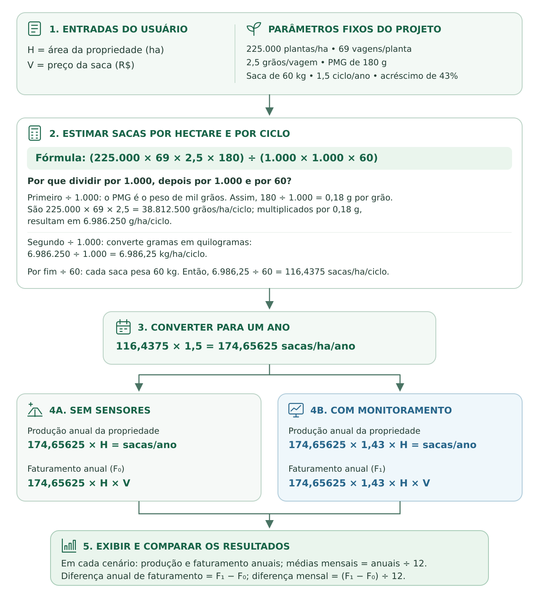

SIMULAÇÃO COM CALCULADORA FINANCEIRA
Empresa:
Informe o tamanho da sua fazenda de soja:
Informe o valor das sacas/ha na sua fazenda:
Calcular economia
Como funciona esta calculadora?

Ative o JavaScript para usar o site.